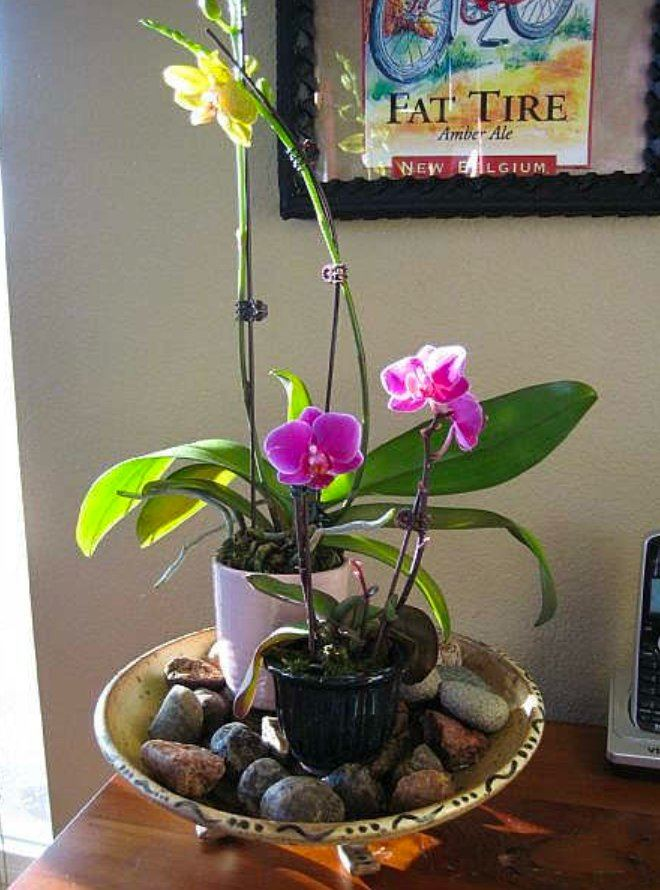
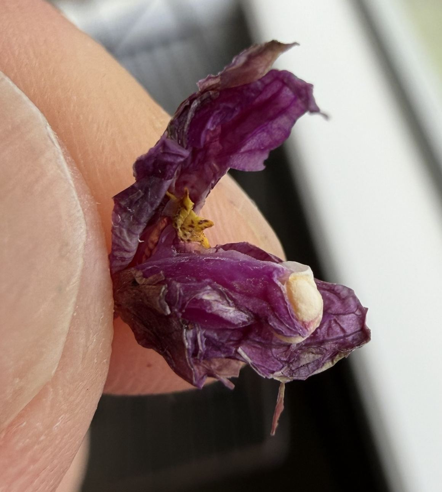
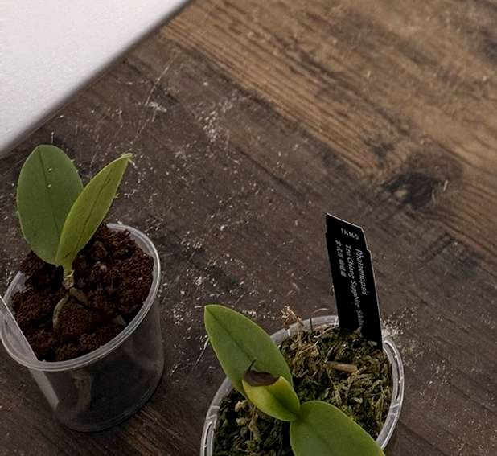

蝴蝶兰挂在东南亚雨林的树干侧面：散射光、温暖、空气流动、根系干湿交替而且永远透气、养分稀薄但不间断。书上没写的问题，回到这几条就能推出答案。
光照
散射光，不要直射
在 Tucker's 的四档光照里，蝴蝶兰属于最低的"遮阴"档（500–1500 fc）。实用标准是：这个位置的光够你看书。直射阳光几个小时就能把叶片晒伤。
奥克兰的窗
南半球朝北最亮，其次东北、东。离玻璃半米到一米，夏季午后拉薄纱。光强通常不是问题，玻璃后的积热才是。
看叶色
深绿、叶软：光不够。亮绿偏黄绿：正好。泛红或发紫：光太强，要遮。
温度与空气
冬季：守住底线
没开暖气的奥克兰室内冬夜常在 12–15°C。植株不会马上出问题，但会停止生长，也更容易染病。冬季的核心任务是维持温度下限；起花需要的降温，秋天顺其自然就够了。避开门缝冷风和暖气出风口。
用 VPD 思考，而不是只看湿度
VPD 衡量空气"抽水"的力度。玻璃后面午后 28°C、湿度 50% 时，VPD 约 1.9 kPa，远超 0.5–1.0 的目标。同样的湿度降到 25°C、60%，就回到约 1.3。压住午后温度（遮阴、往里挪、通风）比加湿有效得多。几盆放在一起也能形成小气候。

湿石子托盘的正确用法
Tucker's 的原话：盆可以放在湿石子上，但不能真的泡在水里。水是用来蒸发的，不是用来泡根的；泡着会让下层介质缺氧，还会把盐分吸回去。效果只在叶片周围几厘米内，别期望太高。
通风
空气流动能防止真菌孢子落定、防止花瓣起水斑，也让叶心积水更快干掉。奥克兰冬季阴湿，通风尤其重要。
浇水
核心法则
根要湿透，叶要干。控制的变量是间隔，不是水量：每次都浇透，下次等到干了再浇。拿不准就再等两三天，偏干比偏湿安全。
判断该不该浇
- 掂重：最可靠。记住刚浇透时的手感。
- 看根色：大部分转银白再浇。
- 看盆壁：还有水珠就先别浇。
- 水苔：手指插到中心，还湿就等。
泡盆的规矩
- 泡 10–15 分钟就够，再久会挤掉介质里的空气。
- 不要多盆共用一盆水，软腐菌靠水传播。
- 早上泡，天黑前叶心要干。
- 滴干再放回套盆，套盆底不能积水。
施肥与冲洗
全年用同一款高钾肥，不切换
Tucker's 的说法：蝴蝶兰没有休眠期，全年用 Moth Orchid Tucker，每月清水冲洗一次。换成别的肥，容易长叶多、开花少。手边没有的话，Flowering Orchid Tucker 是最接近的替代（同样走高钾路线）。起作用的是降氮提钾，高磷并不促花。
| 对象 | 肥水 EC（µS/cm） | 说明 |
|---|---|---|
| 成年株，生长期 | 500–700 | Tucker's 给的总范围是 500–1300，蝴蝶兰取下段。EC 含自来水本底，先测一次自来水。 |
| 成年株，花期 | 400–600 | |
| 小苗、刚换盆 | 250–400 | 水苔更容易积盐，压在最低档。 |
恢复施肥要阶梯式加量
冬天少喂之后，按 Tucker's 的阶梯从 1/4 浓度开始，每月加一档：1/4 → 1/2 → 3/4 → 全量。天冷时把间隔拉长到 10–14 天，但不完全停。
测 pH：顶淋法
浇水一小时后，从上淋一点蒸馏水，接盆底流出的约 30 ml 来测。目标 5.5–6.5。偏高用柠檬酸往下调，偏低用石灰往上调。同一份水顺便测 EC，看趋势。
花苞与开花

两种落苞，原因不同
花序末端又小又绿的苞变黄掉落：换环境后植株放弃最弱的库，一次性的，正常。
快开的大苞在开放前干掉：开放那一刻空气太热太干，多半是玻璃后的午后积热。改善位置的小气候。
剖开落苞看一眼
里面干净只是发黄，是生理性的；有褐色条斑、残渣或小虫，是蓟马或粉介壳虫。还要远离成熟水果和燃气取暖器（乙烯）。
花期里
不挪位置、不转盆，浇水节奏保持稳定。花苞已经朝光排好了，转动会让花序变乱。每隔几天看看花梗：开始发黄的那个苞，就是下一个要掉的。
促使再开花
秋天让昼夜平均温度下降 5–8°C，最多持续 6 周，在奥克兰挪进没开暖气的房间即可。这期间继续喂，每 10–14 天一次。花谢后，剪在第一朵花下面那个节点上方，节点可能再抽出侧枝。
基质与换盆
什么时候换
花谢之后、新根尖刚冒出 0.5–1 cm 时，春到夏，12 月最理想。有花箭的不换。开始考虑换盆的信号：同季节下干燥间隔明显变长、树皮一捏就碎、有酸味，或者根往盆外逃。
怎么换
- 盆只比根团大一点，多出来的介质只会多持水。
- 种到最下面一片叶子下方第一条根的高度。
- 牢牢附在根上的树皮别硬扯。
- 新树皮提前泡一夜，解决疏水问题。

水苔还是树皮
水苔省事、保湿，适合小苗和暖和的房间，但一年左右就会分解，而且最容易浇多。细到中号树皮（小苗用 2 号，5–10 mm）通气、耐用，和成年株的管理也一致。从水苔换到树皮的头几周干得快很多，要浇得勤一些。
病虫害
粉介壳虫（mealybug）
白色棉絮状，藏在叶腋、根和介质深处。Tucker's 的办法是喷叶子之外，整盆浸入药液，连介质里的虫源一起清掉。系统性药剂（如 Groventive）被根吸收进汁液，能顾及喷不到的角落。
用药提醒
BioNeem 对蝴蝶兰要谨慎，先在一片叶上试。烂根的处理：剪掉褐色、发软、外皮一捏就滑脱的根，撒硫磺粉或肉桂粉，换新介质、换小盆。
奥克兰年度节律
花谢后换盆
盯住玻璃后的午后热
勤浇、照常喂
遮正午光、加强通风
花箭出来后不挪位置
夜里注意保温
拉长浇水间隔
放在最亮的朝北窗
快速诊断
| 看到的 | 可能原因 | 怎么做 |
|---|---|---|
| 叶片深绿、发软 | 光照不足 | 往朝北窗挪，冬季可以补光 |
| 叶面焦斑或泛红 | 直射光或玻璃积热 | 离开玻璃，下午拉薄纱 |
| 叶片发软起皱 | 缺水，或根坏了吸不上水 | 先看根：根是湿的、叶却软，就是根的问题 |
| 根褐色、软烂 | 积水缺氧 | 剪掉烂根，换新介质，用小盆 |
| 叶心发黑腐烂 | 叶心积水过夜 | 改早上浇；切掉腐烂部分，撒硫磺粉 |
| 叶尖发褐，盆面有白霜 | 积盐 | 顶浇冲洗两遍，测流出液 EC |
| 快开的苞干掉 | 午后热、空气干 | 往里挪，遮阴，放湿石子托盘 |
| 只长叶不开花 | 氮太多，或缺少秋季降温 | 坚持用高钾肥，秋天降温处理 |
| 叶腋有白色棉絮 | 粉介壳虫 | 整盆浸药，配合系统性药剂 |
| 亮绿叶、绿色根尖 | 状态良好 | 保持现状 |